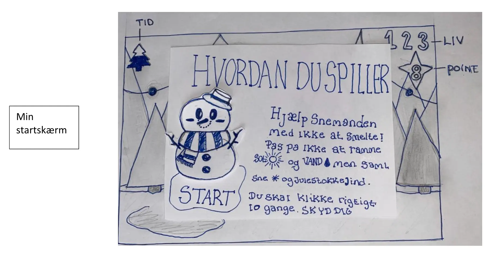
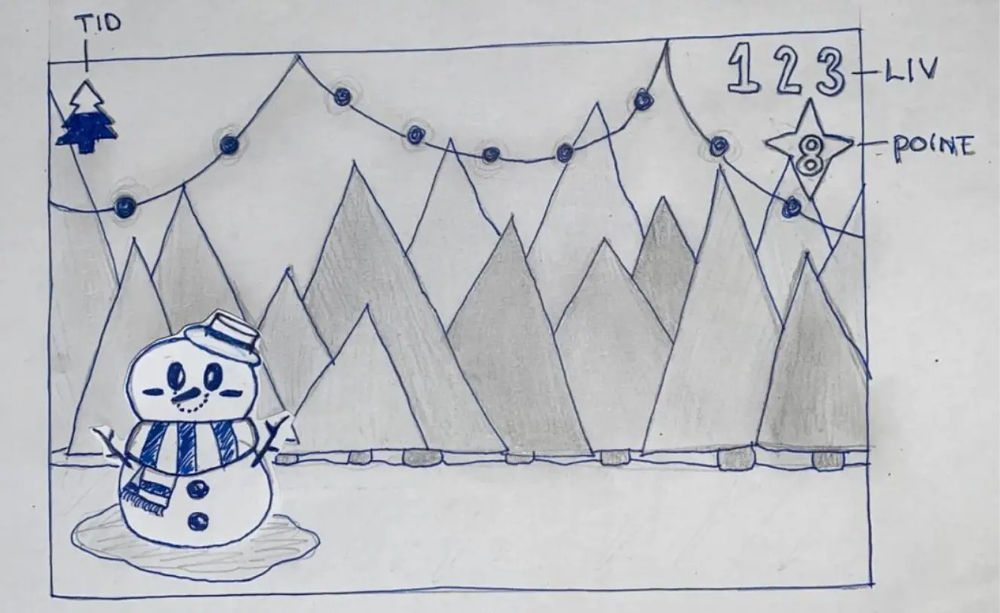
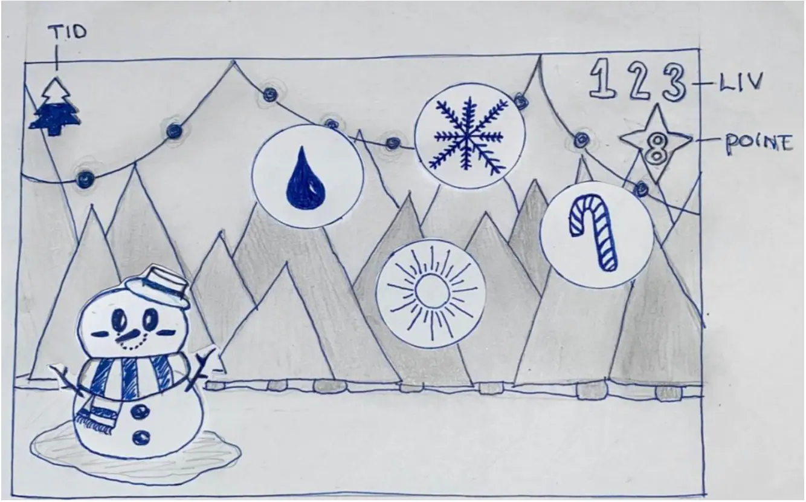
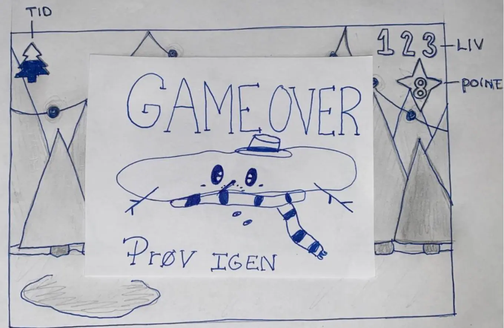

Animation
I Tema 4, skulle vi lave vores egen interaktive animeret spil via JavaScript, Html og CSS. For at komme i gang skulle vi først lave ideudvikling hvor vi skulle vælge en stil (Flat design/Kawaii) og lave en prototype. Før vi begyndte at kode spillet skulle vi gøre brug af Aktivitetsdiagram og Statemachinediagram. Jeg har også fået en bred forståelse af design af ui-elementer og baggrundsdesign ved brug af Adobe illustrator. Jeg fik designet og programeret et spil det hedder "Mr.Snowman", som er et spil der går primært ud til den yngre målgruppe. Mit spil handler om en snemand der ikke må smelte. Ved at rede snemanden skal man indsamle de faldende snefnug eller julestokkende, hvis du rammer en dråbe eller en sol mister du dine liv. Klik her for Temaopgave
Hvordan du spiller 
Spilleskærm 
Spillets forløb 
Game over 
Level Complete

Animationer

Java Script
For at lave et spil kan man ikke komme udenom Javascript, da Javascript er alt det funktionelle på en side. Vi lærte om funktioner som er designet til at udføre en bestemt opgave som for eksempel "Start spillet", Man kan kalde på en funktion, til at udgøre en handling. Under functionen "Start spillet" er der forskellige handlinger det kunne være at et id.element skal hoppe, dreje, frys mm… Let er en variabel som jeg bruger til at fremvise mine point, liv og random position. Jeg bruger også if og ef-else til at beregne om man ender i gameover og levelcomplete.
Aktivitetsdiagram
Aktivitetdiagram brugte jeg i starten af forløbet til at danne mig et overblik af spillets forløb, inden jeg begyndte at kode. Diagrammet bliver brugt til at få en struktureret og skabe et bedre overblik. Klik her for Aktivitetsdiagram
Statemachinediagram
Statemachinediagram brugte jeg til at lave en plan over hvordan spillet helt konkret skulle kodes. Jeg planlagde hvilke animationer der skulle gøre hvad og hvornår og hvilke navne der skulle indledes. Dette diagram er mere detalieret og præcist frem for aktivitetsdiagram. Klik her for Statemachinediagram